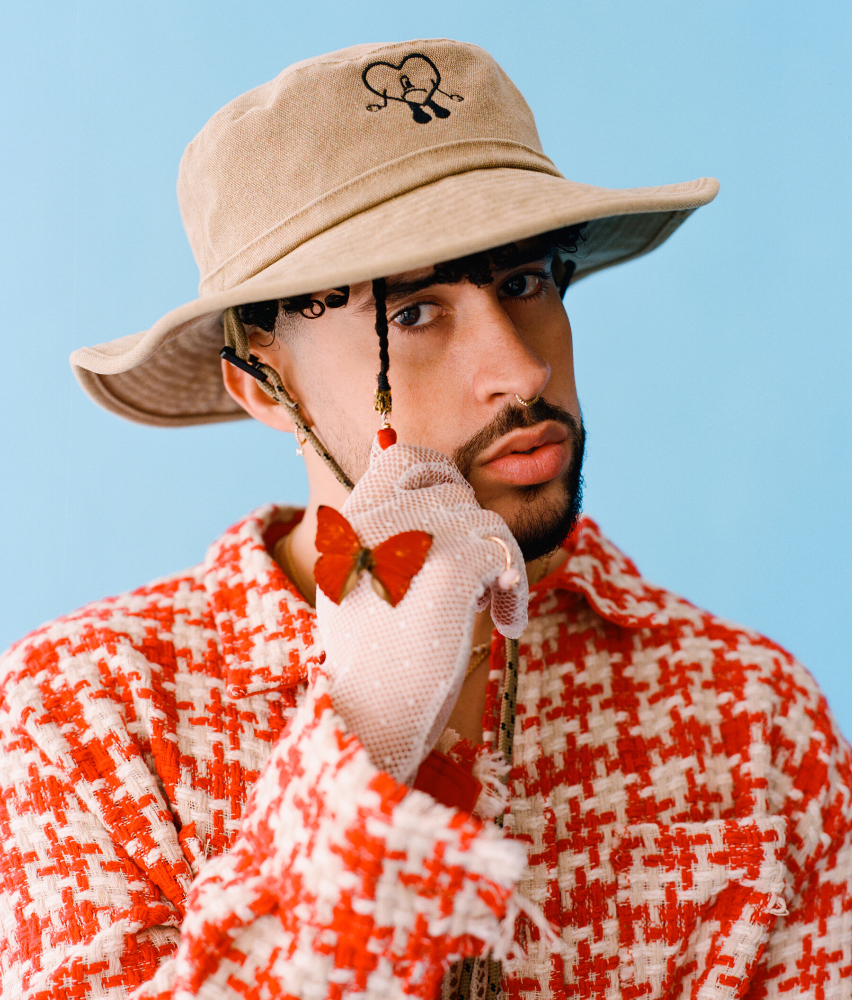
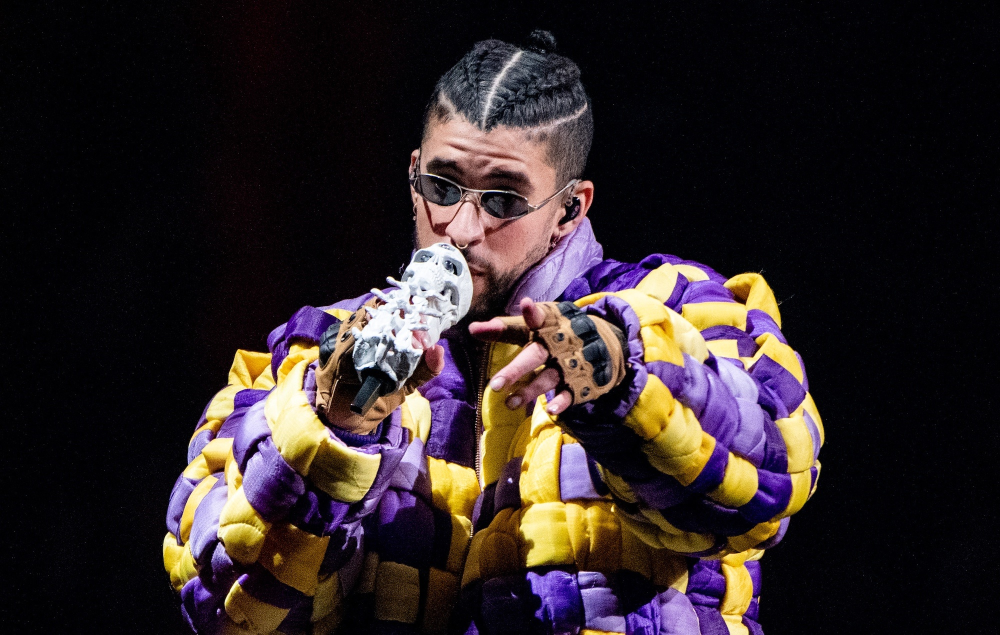
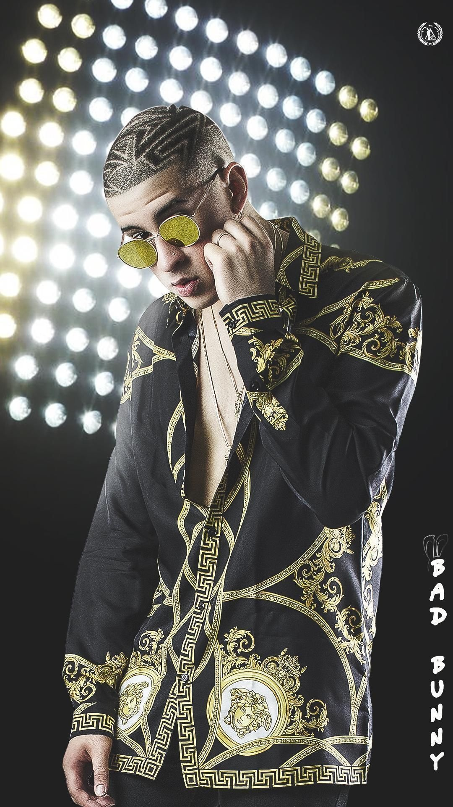
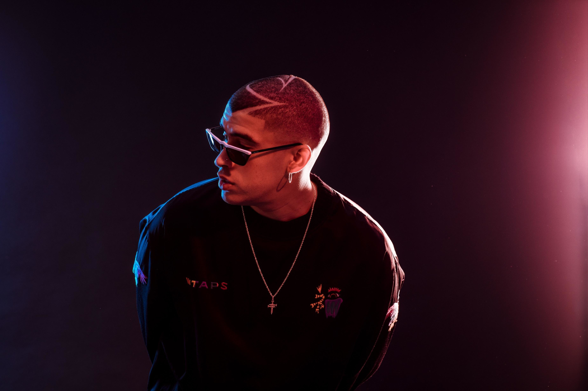

Biography
Bentio Antonio Martinez Ocasio known as Bad Bunny, is a Puerto Rican rapper, singer, songwriter, and record producer regarded as the "King of Latin Trap" and a global music icon.
Early Life and Family
Bad Bunny was born in Vega Baja, Puerto Rico, and raised in the Almirante Sur neighborhood. His father, Tito Martinez worked as a truck driver, while his mother, Lysaurie Ocasio, was a schoolteacher. He has two younger bothers, Bernie and Bysael. Growing up in a working-class household, he was shaped by strong family values and local community life.
During his childhood he regularly attended church with his mother and sang in the church choir. This early exposure to music played a significate role in shaping his musical dispcipline and stage awareness. At home, he listened to salsa, merengue, and romantic ballads before gravitating towards reggaeton and hip hop music during his teen years.
He later studied audiovisual communication at the University of Puerto Rico at Arecibo. Although he did not complete his degree, the program strongly influenced his visual language.
Career Begins (2008-2017)
Bad Bunny began recording music in his teens and gained early attention by uploading songs to SoundCloud. In 2016, his track "Diles" caught the attention of producer DJ Luian, marking the start of his professional career. A series of singles followed, quickly positioning him as one of the most distinctive voices in the emerging Latin trap scene.
International Breakthrough and Reconition (2018-2019)
In November 2018, Bad Bunny released "Te Guste" with Jennifer lopez, accompanied by a music video directed by Mike Ho. That same year, his debut ablum "X 100pre" received widespread critical acclaim and marked his transition into global a music figure. His collaboration with Cardi B and J Balvin on "I Like It" reached number one on the Billboard Hot 100, making it one of the few fully Spanish-language songs to top the charts. In 2019, released the collaborative album Oasis with Balvin and appeared on the main stage at Coachella, further cementing his International stature.
2020 and Beyond: Records, Activism, and Global Impact
The year 2020 represented a defining moment in Bad Bunny's career. His album "YHLQMDLG" reached number two on the Billboard 200, setting records for Spanish-language releases. Later that year, "El Ultimo Tour Del Mundo" debuted at number one, becomming the first entirely Spanish-language album to achieve that position.
In the same period, he became the most streamed artist on Spotify worldwide. Alongside his commercial success, Bad Bunny emerged as a vocal advocate for social causes, participting in political protest in Puerto Rico and publicly supporting gender equality, LGBTQ+ rights, and anti-violence movements.
Photos of Bad Bunny



